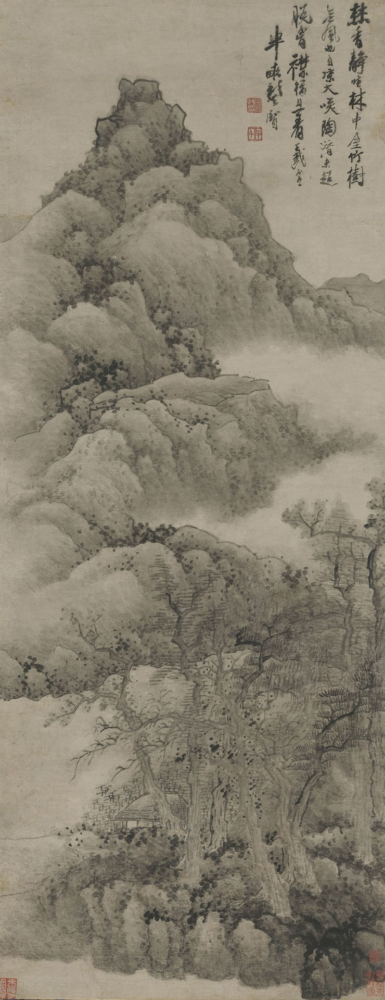
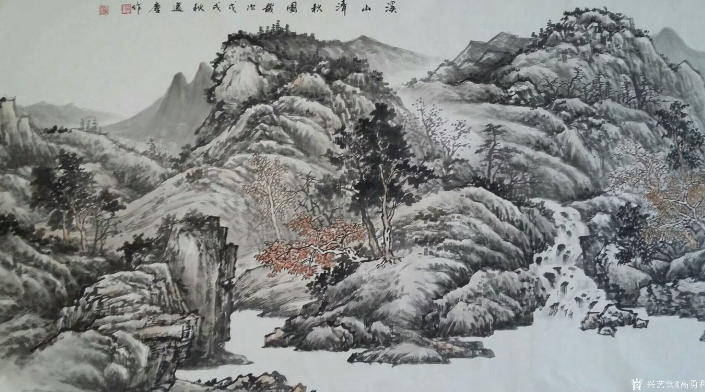
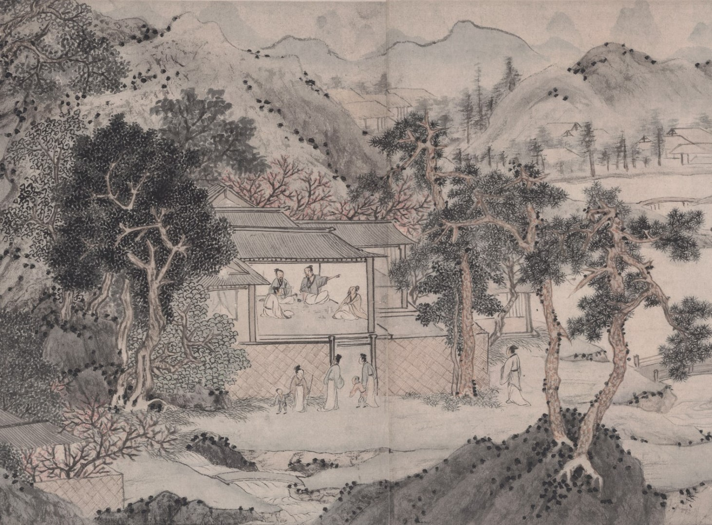

全部流派


金陵八家
金陵八家，指清代前期南京地区的八位著名画家，包括龚贤、樊圻、吴宏、邹喆、谢荪、叶欣、高岑、胡慥。他们虽题材和风格各异，但都负有一定时誉。其中，龚贤擅长山水画，他的画作往往墨色淋漓，被称为“黑龚”。金陵八家的作品，反映了明末清初南京地区的绘画风格和审美取向，对后世产生了深远影响。

松江画派
松江画派，又称云间画派，是晚明松江府治（今属上海市）下三个山水画派的总称，包括苏松画派、云间画派、华亭画派。松江画派讲究水晕墨章，古雅神韵，富于江南清疏情致。董其昌作为松江画派的领军人物，其绘画思想、创作原理、艺术风格以及“南北宗”学说，产生了历史性的影响。松江画派对后世及“海上画派”的形成具有较大影响。

吴家四门
吴家四门是指清代初期以吴历为代表的绘画世家。吴历及其家族成员在绘画上均有深厚造诣，擅长山水、花鸟等多种题材。他们的画作笔墨精湛，色彩丰富，构图严谨，展现了清代初期绘画艺术的高超水平。由于吴家四门的成员在绘画上各有特色，因此他们的作品也呈现出多样化的风格。

扬州画派
扬州画派，即清代有创新精神的画家群体，是清代有扬州地区一些风格相近的书画家的总称。他们继承了文人画的传统，但更强调个性表现和笔墨技法上的创新。扬州画派的画家们擅长花鸟、山水等多种题材，他们的画作往往构图新颖，笔墨灵动，色彩明快，充满了生活气息和艺术感染力。扬州画派对清代及近现代绘画艺术的发展产生了重要影响。